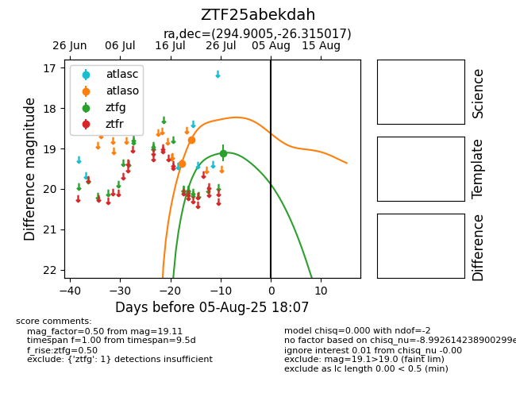

Target ZTF25abekdah at 2025-08-05 18:07, see:
FINK: fink-portal.org/ZTF25abekdah
Lasair: lasair-ztf.lsst.ac.uk/objects/ZTF25abekdah
ALeRCE: alerce.online/object/ZTF25abekdah
alt names
ZTF25abekdah (ztf,fink)
coordinates:
equatorial (ra, dec) = (294.9005,-26.31502)
galactic (l, b) = (13.4997,-21.62701)
photometry
last atlaso=18.78, ztfg=19.11
2 atlaso, 1 ztfg detections
